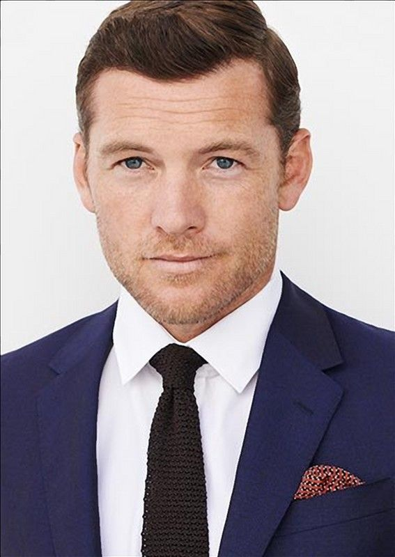

Jennifer Lawrence nació el 15 de agosto de 1990 en Louisville, Kentucky, EE. UU. Desde muy joven mostró interés por la actuación y se mudó a Nueva York para perseguir su carrera. Su gran oportunidad llegó con la película Winter’s Bone (2010), que le valió su primera nominación al Oscar a Mejor Actriz con tan solo 20 años. Pero fue en 2012, cuando interpretó a Katniss Everdeen en Los Juegos del Hambre, que Jennifer se convirtió en una superestrella mundial. Su actuación como la valiente heroína de Panem capturó la atención de millones, consolidándola como uno de los rostros más importantes de su generación.
¿Cómo se hicieron Los Juegos del Hambre? La saga, basada en los libros de Suzanne Collins, fue filmada entre 2011 y 2015. Las escenas del "Distrito 12" se grabaron en Carolina del Norte, y los vestuarios, como el famoso traje en llamas de Katniss, fueron diseñados con un estilo único que mezclaba lo futurista con lo distópico. Una curiosidad que no muchos saben es que Jennifer Lawrence entrenó con un arquero olímpico para interpretar a Katniss, quien le enseñó técnicas profesionales de arquería. ¡Y terminó siendo bastante buena!

Sam Worthington, nacido el 2 de agosto de 1976 en Inglaterra y criado en Australia, saltó a la fama mundial al interpretar a Jake Sully, el exmarine que se convierte en parte del pueblo Na’vi en la saga Avatar de James Cameron. Aunque antes había trabajado en cine y televisión australiana, fue Avatar (2009) la película que lo convirtió en una estrella internacional. En Avatar: El camino del agua (2022), Sam retomó su papel más icónico, pero esta vez enfrentando un reto aún mayor: actuar bajo el agua durante largos periodos de tiempo. Además de Avatar, ha participado en películas como Furia de Titanes, Terminator Salvation y Hacksaw Ridge.
Curiosidades del rodaje de Avatar: El camino del agua Sam Worthington tuvo que aprender a contener la respiración por más de 5 minutos Para las escenas submarinas, todo el elenco se entrenó en apnea estática con especialistas. Sam logró aguantar más de cinco minutos bajo el agua sin oxígeno durante las filmaciones. Las escenas bajo el agua se grabaron en un tanque gigante El director James Cameron insistió en usar agua real para mantener el realismo. Las escenas acuáticas no se hicieron en CGI completo: se filmaron en un enorme tanque con más de 900,000 litros de agua, y luego se usaron efectos visuales para crear el mundo submarino de Pandora.